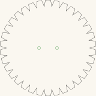
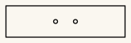

Buzz disc — two designs
A buzz disc is a flat piece threaded on a loop of cord that passes through two holes near its centre. Wind the loop up by swinging the disc, then pull and release the ends rhythmically: the cord unwinds, spins the disc, winds up the other way, and the disc whirrs back and forth. A toothed rim turns that whirr into a buzz.
Two designs, both cut-ready, both with a pair of 5mm cord holes.
Get the files
- Everything as a ZIP — both designs.
- Repository — if you want to change the outline or the hole spacing.
- Or click either picture below to download that one cut file.
Released under CC0 1.0 — do what you like with them, no attribution needed. Built for LaserMadeMusic.
The two designs
Click either to download the cut file. The pictures are display renderings — the cut files draw a hairline on no background at all, which a browser shows almost invisibly, so these are thickened and painted onto a light ground and cropped to the part. Each is at its own scale; read the sizes rather than the pictures.
 |
 |
| Toothed disc · 160 × 161mm | Plain bar · 150 × 40mm |
{kind=link}
{kind=link}
What the files contain
Measured out of the files themselves:
| Design | Outline | Cord holes | Spacing, centre to centre |
|---|---|---|---|
BuzzDisc1.svg | 160.5 × 160.7mm, sawtooth rim | two, 5mm | 30mm |
BuzzDisc2.svg | 150.0 × 40.0mm rectangle | two, 5mm | 25mm |
In both, the pair of holes straddles the centre and sits on the centreline — 15mm and 12.5mm either side of it respectively. That symmetry is what lets the disc wind and unwind evenly instead of wobbling.
Each file is one sheet, 495 × 279mm, with the part positioned on it. Output is millimetre-true — 1 user unit = 1 mm with a physical width/height — so it prints and cuts at real size. Every line is a cut; there is no engrave layer and nothing to map by colour.
What the two designs do differently
The toothed disc is the buzzing one. Its rim is cut into triangular teeth, and those teeth chopping the air are what turn a quiet whirr into the sound the instrument is named for. It is also the larger and heavier of the two, which means more stored energy and a longer run between pulls.
The plain bar has no teeth and a much smaller area. Expect it to be quieter and faster to spin up — closer to a whirring button than a buzzer. It is the simpler cut, and the better first one to try.
Before you cut
Cut these in 3mm Baltic birch plywood — that is what they are built in. The disc is under real tension in use and the cord holes are where it fails: a ply that delaminates gives way there first, which is why Baltic birch and its void-free core is worth the difference over a cheaper sheet.
The cord is not in these files. A continuous loop through both holes is the usual arrangement; length and thickness are yours to settle by trying.
Mind the teeth. A 160mm toothed disc spinning fast at the end of a cord loop is sharp and moving; keep it away from faces.
Files
BuzzDisc1.svg · BuzzDisc2.svg | the two cut-ready designs |
previews/ | display renderings — not cut files |
index.md · index.html | this page; the markdown is the source |